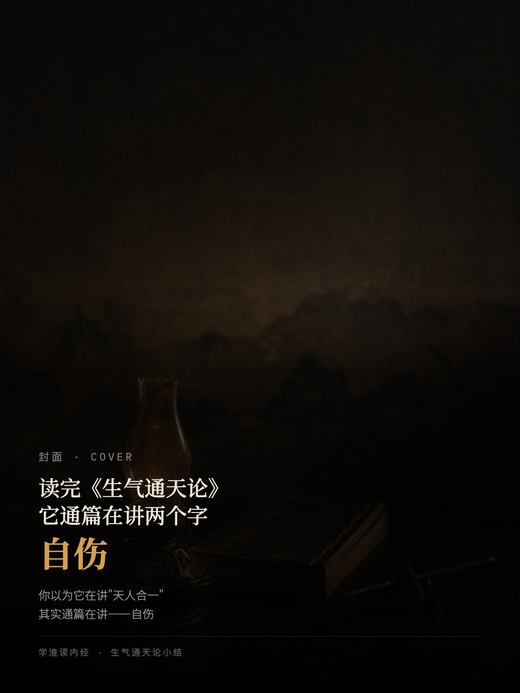
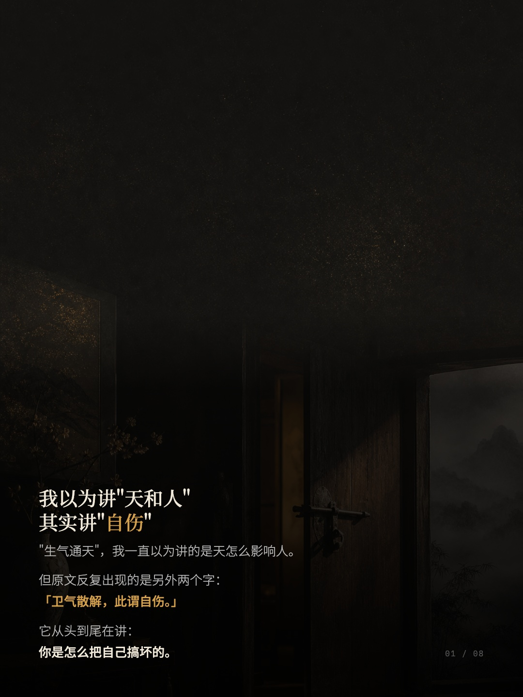
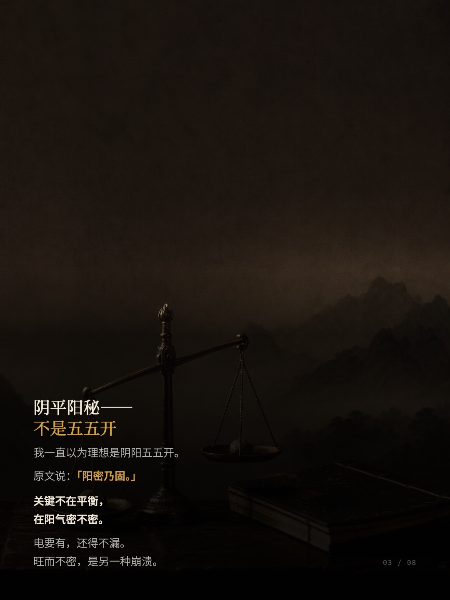
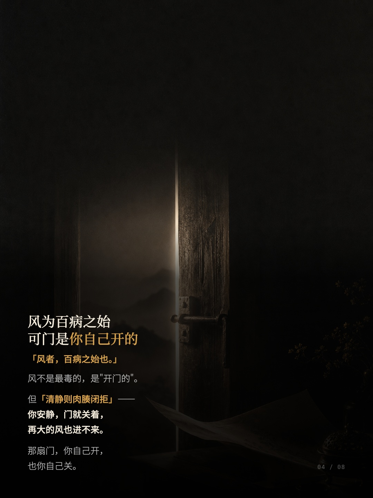
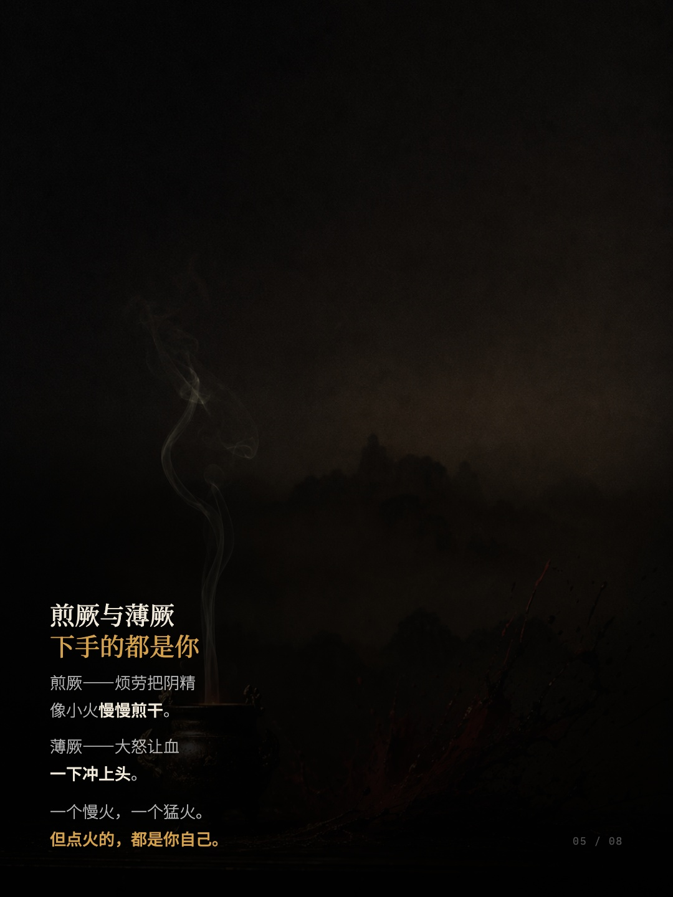
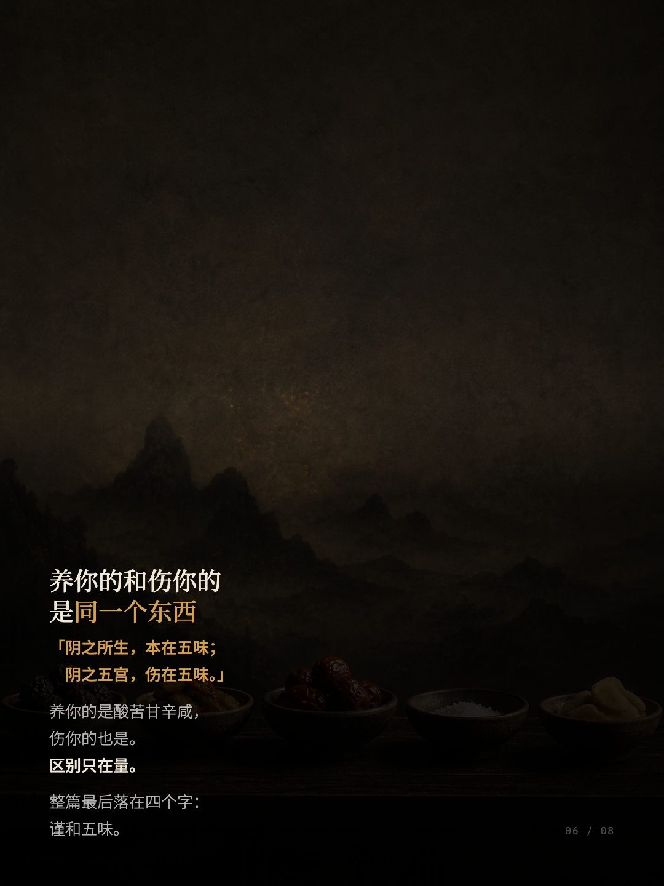
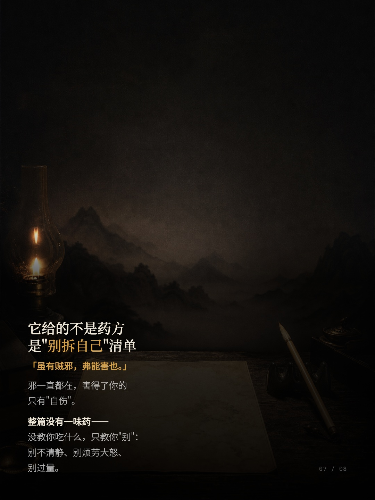
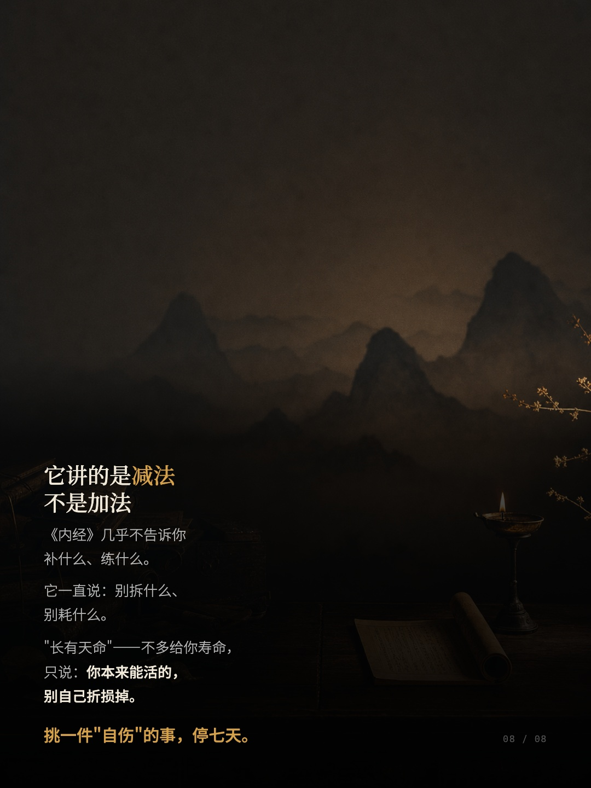

"生气通天"，我一直以为讲的是天怎么影响人。
但原文反复出现的是另外两个字：
「卫气散解，此谓自伤。」
它从头到尾在讲：
你是怎么把自己搞坏的。

封面 · Cover
读完《生气通天论》
它通篇在讲两个字
自伤
你以为它在讲"天人合一"
其实通篇在讲——自伤
学渣读内经 · 生气通天论小结

我以为讲"天和人"
其实讲"自伤"
"生气通天"，我一直以为讲的是天怎么影响人。
但原文反复出现的是另外两个字：
「卫气散解，此谓自伤。」
它从头到尾在讲：
你是怎么把自己搞坏的。
01 / 08
阳气，是你这台机器的电源
「阳气者，若天与日。」
不是锦上添花的暖气，
是底层电源。
太阳没了不是某个零件坏，
是整机关机。
而它的活儿是"卫外"——
像边防军守在体表。
02 / 08

阴平阳秘——
不是五五开
我一直以为理想是阴阳五五开。
原文说：「阳密乃固。」
关键不在平衡，
在阳气密不密。
电要有，还得不漏。
旺而不密，是另一种崩溃。
03 / 08

风为百病之始
可门是你自己开的
「风者，百病之始也。」
风不是最毒的，是"开门的"。
但「清静则肉腠闭拒」——
你安静，门就关着，
再大的风也进不来。
那扇门，你自己开，
也你自己关。
04 / 08

煎厥与薄厥
下手的都是你
煎厥——烦劳把阴精
像小火慢慢煎干。
薄厥——大怒让血
一下冲上头。
一个慢火，一个猛火。
但点火的，都是你自己。
05 / 08

养你的和伤你的
是同一个东西
「阴之所生，本在五味；
阴之五宫，伤在五味。」
养你的是酸苦甘辛咸，
伤你的也是。
区别只在量。
整篇最后落在四个字：
谨和五味。
06 / 08

它给的不是药方
是"别拆自己"清单
「虽有贼邪，弗能害也。」
邪一直都在，害得了你的
只有"自伤"。
整篇没有一味药——
没教你吃什么，只教你"别"：
别不清静、别烦劳大怒、
别过量。
07 / 08

它讲的是减法
不是加法
《内经》几乎不告诉你
补什么、练什么。
它一直说：别拆什么、
别耗什么。
"长有天命"——不多给你寿命，
只说：你本来能活的，
别自己折损掉。
挑一件"自伤"的事，停七天。
08 / 08